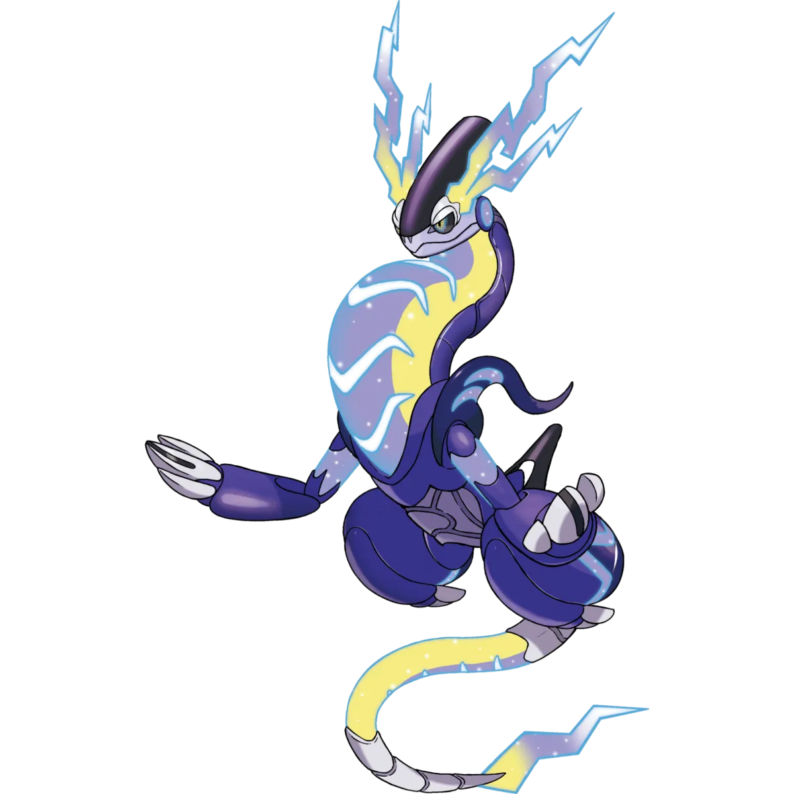
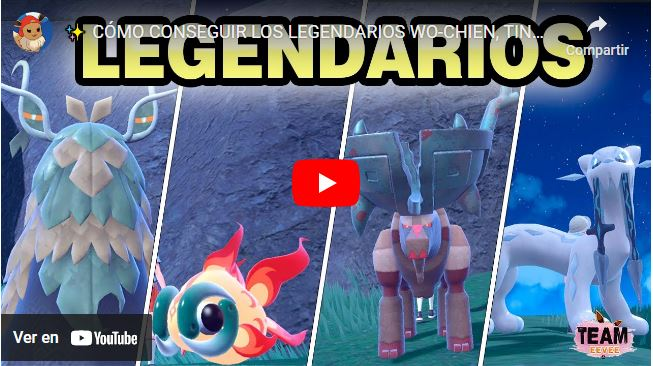
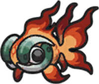
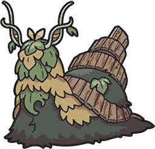
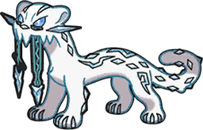
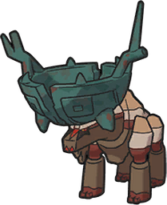

Koraidon:Es un pokemon legendario inspirado en el pasado.
Tipo:Lucha y Dragón

Miraidon:Es un pokemon legendario inspirado en el pasado.
Tipo:Eléctrico y Dragón

Chi-Yu Es un pokemon inspirado en un pez dorado japones y tiene como tipo principal fuego y siniestro. Es el primero del escuadron de las legendas funestas de la region de paldea

Wo-Chien Es un pokemon inspirado en un caracol siendo una planta de bambú y tiene como tipo principal planta y siniestro. Es el segundo del escuadron de las legendas funestas de la region de paldea

Chien-Pao Es un pokemon inspirado en una leopardo con espadas como colmillos y tiene como tipo principal hielo y siniestro. Es el tercero del escuadron de las legendas funestas de la region de paldea

Ting-Lu Es un pokemon inspirado en un ciervo con un tipo de vasija china en la cabeza como si fueran los cuernos y tiene como tipo principal tierra y siniestro. Es el cuarto del escuadron de las legendas funestas de la region de paldea
